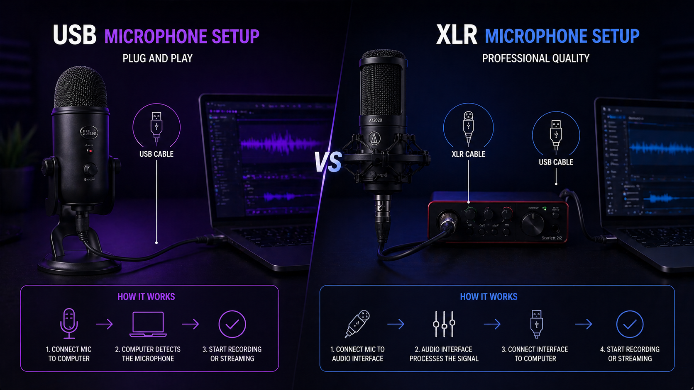

Звук — это 70% успеха стрима. Зрители могут простить посредственную картинку, но никогда не будут слушать плохой звук. Главный вопрос, который встаёт перед каждым начинающим стримером: какой микрофон выбрать — USB или XLR? В этом гайде мы разберём плюсы и минусы обоих типов, сравним бюджеты и поможем принять правильное решение.
📑 Содержание
USB vs XLR: в чём принципиальная разница?
🔌 USB-микрофоны
В USB-микрофон уже встроен аудиоинтерфейс (звуковая карта). Вы просто подключаете его к компьютеру по USB, выбираете как устройство ввода — и всё работает. Это plug-and-play решение.
🎙️ XLR-микрофоны
XLR — это профессиональный аналоговый разъём. Чтобы подключить такой микрофон к компьютеру, нужен внешний аудиоинтерфейс (звуковая карта) или микшерный пульт. Это даёт больше контроля над звуком, но требует дополнительных вложений и настройки.

USB-микрофоны: плюсы и минусы
Плюсы
- Простота — подключил и работает, не нужны дополнительные устройства.
- Цена — хороший USB-микрофон стоит 5 000 – 15 000 ₽. Это дешевле, чем XLR + интерфейс.
- Компактность — всё в одном корпусе, не занимает много места на столе.
Минусы
- Качество звука ограничено — встроенный аудиоинтерфейс не дотягивает до внешнего.
- Сложно апгрейдить — нельзя заменить только микрофон или только интерфейс, придётся менять всё сразу.
- Меньше контроля — нет физических ручек громкости, меньше настроек усиления.
XLR-микрофоны: плюсы и минусы
Плюсы
- Качество звука — профессиональный уровень, чистый и детальный сигнал.
- Гибкость — можно менять микрофон и интерфейс независимо.
- Физический контроль — ручки усиления, фантомное питание, мониторинг в реальном времени.
- Подключение нескольких микрофонов — для подкастов с гостями.
Минусы
- Цена — микрофон + интерфейс + XLR-кабель = 20 000 – 40 000 ₽ и выше.
- Сложнее в настройке — нужно понимать, что такое усиление (gain), фантомное питание (+48V), уровни сигнала.
- Занимает место — интерфейс и кабели требуют места на столе.
Сравнение бюджетов и качества
| Категория | USB-микрофон | XLR + интерфейс |
|---|---|---|
| Начальный уровень | 5 000 – 8 000 ₽ | 15 000 – 20 000 ₽ |
| Средний уровень | 10 000 – 15 000 ₽ | 25 000 – 35 000 ₽ |
| Профессиональный | 20 000+ ₽ (редко) | 50 000+ ₽ |
| Качество звука (1-10) | 7-8 | 9-10 |
| Простота настройки | Очень легко | Требует обучения |
| Рекомендация | Новичкам, одиночным стримерам | Профи, подкастерам, музыкантам |
💡 Совет по бюджету
Если ваш общий бюджет на стрим менее 50 000 ₽ — берите USB-микрофон. Разница в качестве звука не будет заметна на фоне других факторов (освещение, камера, интернет). Деньги лучше вложить в свет или камеру.
Топ-5 микрофонов для стримеров
USB-микрофоны
- Blue Yeti — легенда, 4 диаграммы направленности, 12 000 ₽.
- HyperX QuadCast S — RGB-подсветка, антивибрационное крепление, 14 000 ₽.
- Elgato Wave:3 — отличное ПО для микширования, 15 000 ₽.
- Razer Seiren Mini — бюджетный вариант, 5 000 ₽.
XLR-микрофоны + интерфейсы
- Shure SM7B + Focusrite Scarlett 2i2 — индустриальный стандарт, 65 000 ₽ за комплект.
- Rode PodMic + GoXLR Mini — отличный набор для стримов, 45 000 ₽.
- Audio-Technica AT2020 + Behringer U-Phoria UM2 — бюджетный XLR старт, 18 000 ₽.
- Elgato Wave DX + Wave XLR — интеграция с ПО Elgato, 30 000 ₽.
🎤 «Shure SM7B — микрофон, которым пользуются топовые стримеры и подкастеры. Но без хорошего предусилителя он звучит тихо. Учитывайте это при выборе интерфейса».
Что выбрать именно вам?
Берите USB, если:
- Вы начинающий стример и хотите начать быстро и без заморочек.
- Бюджет ограничен (до 15 000 ₽ на звук).
- Вы стримите один, без гостей и подкастов.
- У вас мало места на столе.
Берите XLR, если:
- Вы планируете развиваться профессионально и готовы вложиться в качество.
- Бюджет на звук от 20 000 ₽.
- Вы ведёте подкасты или стримы с гостями (нужно несколько микрофонов).
- Вы музыкант или аудиофил, для вас важен каждый нюанс звука.
🔧 Не забывайте про обработку звука!
Даже лучший микрофон не спасёт без правильной настройки. В OBS обязательно добавьте фильтры: шумоподавление (RNNoise), компрессор, эквалайзер. Читайте наш гайд по идеальному звуку в OBS.